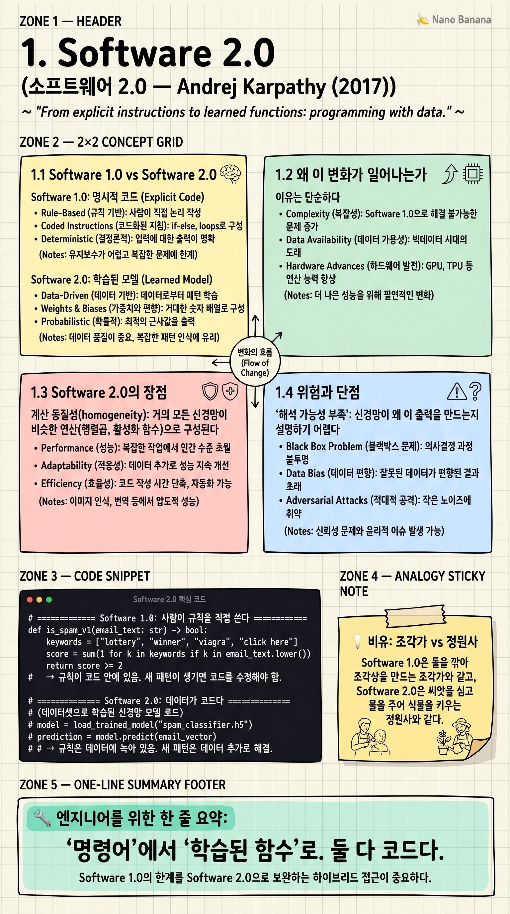

Software 2.0

🎯 학습 목표
- Software 1.0과 2.0의 본질적 차이를 설명할 수 있다
- 왜 일부 문제는 1.0보다 2.0이 더 잘 푸는지 이해한다
- Software 2.0의 장점과 위험을 균형 있게 평가할 수 있다
- 데이터셋을 '코드'로 다루는 마인드셋을 갖춘다
- LLM 시대에 이 글이 어떻게 확장되었는지 본다
Andrej Karpathy가 2017년 Tesla AI Director 시절 발표한 짧지만 결정적인 글이다. 핵심 명제는 단 하나 — 프로그래밍이라는 행위 자체가 바뀌고 있다는 것. 우리는 더 이상 컴퓨터에게 '어떻게 해야 하는지'를 한 줄씩 적어주지 않는다. 대신 우리는 데이터를 모으고, 모델 구조를 정의하고, 옵티마이저에게 '코드를 찾으라'고 시킨다.
2017년 당시엔 주로 이미지 인식·음성 처리 같은 좁은 도메인 얘기였다. 하지만 2022년 ChatGPT 이후, 이 패러다임이 일반 프로그래밍 전체를 잠식하기 시작했다. 그래서 2025년에 다시 읽으면 이 글은 단순한 트렌드 분석이 아니라 예언서다. AI 에이전트 시대 개발자가 가장 먼저 흡수해야 할 마인드셋이 여기 있다.
핵심 내용
1.1 Software 1.0 vs Software 2.0
Software 1.0은 인간이 직접 쓴 명령어다. Python, C++, Java... 컴파일러가 읽을 수 있는 모든 코드. 우리가 '이 입력이 들어오면 이렇게 처리해'를 한 줄씩 적어준다. 결과는 결정론적이고, 사람이 한 줄 한 줄 검증할 수 있다.
Software 2.0은 신경망의 가중치다. 우리가 직접 쓰지 않는다. 우리는 (1) 데이터셋과 (2) 모델 구조와 (3) loss function만 정의한다. 그러면 옵티마이저(SGD, Adam 등)가 가능한 가중치 공간을 탐색해서 우리가 원하는 동작을 만드는 가중치 조합을 찾아낸다. 코드는 '써지는' 것이 아니라 '발견되는' 거다.
Karpathy의 한 줄 요약: 1.0은 어떻게(how)를 명시한다. 2.0은 무엇(what — 데이터 = 예시)을 명시하면, 어떻게는 기계가 찾는다.
1.2 왜 이 변화가 일어나는가
이유는 단순하다. 인간의 직관과 명시적 규칙으로는 너무 복잡한 함수가 세상에 너무 많기 때문이다. '이 픽셀들이 고양이인가?'를 if-else로 적을 방법이 없다. 수십 년간 컴퓨터 비전 연구자들이 시도했지만 전부 실패했다.
그런데 1만 장의 고양이 사진을 보여주면 신경망은 그 함수를 학습한다. 'how' 를 인간이 짜내려는 시도를 포기하고, 데이터를 통해 'what'만 보여주면 기계가 알아서 'how'를 찾는다는 사실이 핵심이다.
Karpathy는 2017년 시점에 이미 음성 인식, 이미지 인식, 음성 합성, 기계 번역, 게임 플레이, 로보틱스 등 도메인이 모두 1.0에서 2.0으로 넘어갔다고 지적한다. 2025년엔 여기에 코드 생성, 글쓰기, 추론, 에이전트 작업이 추가됐다.
1.3 Software 2.0의 장점
계산 동질성(homogeneity): 거의 모든 신경망이 비슷한 연산(행렬곱, 활성화 함수)으로 구성된다. 그래서 GPU·TPU 같은 전용 하드웨어에 자연스럽게 최적화된다. Software 1.0은 분기·반복·메모리 접근이 천차만별이라 이런 최적화가 어렵다.
지속적 학습: 새 데이터로 미세조정만 하면 동작이 갱신된다. 1.0 코드 리팩토링과는 비교가 안 될 만큼 가볍다. 이게 LLM이 매년 더 똑똑해지는 이유다.
모듈 결합의 자유: 2.0 모듈들을 학습 단계에서 함께 미분 가능하게 결합할 수 있다. 시각 인코더와 언어 모델을 붙여 vision-language model을 만드는 식. 1.0에서는 API 호출의 합으로만 가능하지만, 2.0에선 끝-끝 학습이 가능하다.
민첩성: 두 분류 클래스의 비율을 바꾸고 싶다? 1.0에선 코드 수정. 2.0에선 데이터 가중치 조정. 훨씬 빠르다.
1.4 위험과 단점
해석 가능성 부족: 신경망이 왜 이 출력을 만드는지 설명하기 어렵다. 의료·금융처럼 설명 책임이 필요한 영역에선 큰 문제다.
적대적 공격에 취약: 한 픽셀만 바꿔도 분류가 뒤집힐 수 있다. 보안 관점에선 1.0보다 약하다.
데이터 분포 의존성: 학습 데이터와 다른 분포가 들어오면 무너진다. 'silent failure' — 틀린 답을 자신 있게 내는 게 가장 무섭다. LLM의 hallucination이 이 카테고리다.
디버깅 방식이 완전히 다르다: 1.0은 로그·breakpoint·스택 추적. 2.0은 데이터셋 큐레이션, loss 그래프, 활성화 분석, 임베딩 공간 시각화. 시니어가 주니어를 평가할 때 이 차이를 인지하는지가 핵심 지표다.
1.5 2025년에서 다시 읽기
Karpathy가 2017년에 쓴 'Software 2.0'은 좁은 도메인 얘기였다. 그러나 LLM의 등장은 그의 예측을 일반 프로그래밍 전체로 확장시켰다.
이제 '프롬프트 엔지니어링'이 부분적으로 코드 작성을 대체했고, 그 발전형인 'context engineering'(맥락을 설계하는 기술)이 주목받고 있다. 자연어가 직접 실행 가능한 명세가 되고 있다는 점에서, Software 2.0의 정신은 더 깊이 파고들고 있다.
그가 2025년에 발표한 'Software 3.0' (이 코스의 마지막 장) 이 바로 이 글의 자연스러운 후속편이다. 10년에 걸친 한 사람의 일관된 사고 흐름을 따라간다는 점에서, 이 코스 전체의 출발점이 되기에 적합하다.
💡 비유로 이해하기
Software 1.0 = 조각가. 한 끌 한 끌 깎아 형상을 만든다. 모든 결, 모든 흠집이 조각가의 의도이고, 어떤 부분이 왜 그렇게 됐는지 설명할 수 있다. 재현 가능하고 검증 가능하지만, 만들 수 있는 형태가 인간의 손과 시간에 묶여 있다.
Software 2.0 = 정원사. 토양(데이터)을 고르고 씨앗(모델 구조)을 심고 햇빛과 물(컴퓨팅)을 준다. 정확히 어느 가지가 어디로 뻗을지는 정원사도 모른다. 하지만 적절한 조건을 주면 인간이 손으로는 절대 만들 수 없는 복잡한 구조가 자라난다.
조각가는 자신이 만든 모든 결을 설명할 수 있다. 정원사는 못 한다. 그래서 정원사는 더 강력하면서 동시에 더 위험하다. AI 시대 개발자는 두 역할을 다 할 줄 알아야 하지만, 점점 정원사 쪽으로 무게중심이 이동하고 있다.
💻 코드 예시
스팸 메일 분류라는 같은 문제를 Software 1.0과 2.0으로 풀어보자. 두 코드의 '코드의 위치'가 어디인지 비교하면 패러다임 차이가 보인다.
# ============== Software 1.0: 사람이 규칙을 직접 쓴다 ==============
def is_spam_v1(email_text: str) -> bool:
keywords = ["lottery", "winner", "viagra", "click here"]
score = sum(1 for k in keywords if k in email_text.lower())
return score >= 2
# → 규칙이 코드 안에 있음. 새 패턴이 생기면 코드를 수정해야 함.
# ============== Software 2.0: 데이터가 코드다 ==============
import torch
import torch.nn as nn
class SpamClassifier(nn.Module):
def __init__(self, vocab_size: int, embed_dim: int = 64):
super().__init__()
self.embed = nn.Embedding(vocab_size, embed_dim)
self.fc = nn.Linear(embed_dim, 2)
def forward(self, x):
# 평균 임베딩 → 로짓
return self.fc(self.embed(x).mean(dim=1))
# 진짜 '코드'는 아래의 데이터다.
training_data = [
("Congrats! You won lottery", 1),
("Meeting at 3pm tomorrow", 0),
# ... 수만 건
]
# 데이터를 바꾸면 모델 동작이 바뀐다. 한 줄의 모델 코드는 그대로다.
1.0 버전에서 '코드'는 if/keywords다. 새 스팸 패턴(예: 암호화폐 사기)이 등장하면 keywords 리스트를 손으로 늘려야 한다. 2.0 버전에서 '코드'는 training_data다. 같은 모델 구조 그대로 새 데이터로 재학습하면, 모델은 새 패턴을 알아서 학습한다. model 코드는 한 줄도 안 바뀐다 — 데이터셋이 진짜 코드라는 Karpathy의 명제가 이 한 줄로 보인다.
🏭 현업에서의 평가
✅ 시니어가 보는 것
- 1.0이 더 나은 영역(결정론·감사·성능 보장)과 2.0이 더 나은 영역(복잡한 패턴 인식)을 구분할 수 있는지
- 데이터 품질·라벨링·분포 변화에 대한 감각
- 모델 평가·모니터링·롤백 체계에 대한 사고
- hallucination·silent failure 대응 전략
⚠️ 레드 플래그
- 'AI가 알아서 다 해준다'는 마법적 사고
- 데이터셋 큐레이션을 잡일로 취급하는 태도
- 모델 성능을 테스트셋 정확도 하나로만 보는 시야
- 프로덕션에 모니터링·관측 없이 LLM을 띄우려는 발상
🎤 예상 인터뷰 질문
- 1.0과 2.0의 디버깅이 어떻게 다른지 예시와 함께 설명해 주세요
- 당신의 시스템에서 1.0이 더 적합한 부분과 2.0이 더 적합한 부분을 구분해 주세요
- 데이터셋이 코드라면 코드 리뷰에 해당하는 활동은 무엇입니까?
✨ 핵심 요약
코드의 정의가 바뀌었다
'명령어'에서 '학습된 함수'로. 둘 다 코드다.
데이터셋이 진짜 소스 코드
2.0에서 동작을 바꾸려면 데이터를 바꾼다.
1.0과 2.0은 공존한다
어느 한쪽으로 몰빵하지 않는 게 시니어의 표식.
디버깅 도구가 완전히 다르다
loss 그래프·임베딩 시각화·데이터 큐레이션이 새 stacktrace다.
Silent failure가 가장 무섭다
틀린 답을 자신 있게 내는 게 LLM의 본질적 위험.
정원사 마인드
조건을 만들고 결과를 모니터링한다. 모든 결을 통제할 수 없다.
2017년의 예언
ChatGPT 이전에 이미 일반 프로그래밍의 미래를 그렸다.
Software 3.0의 씨앗
이 글의 정신이 Karpathy의 2025년 '컴퓨터로서의 LLM'으로 이어진다.